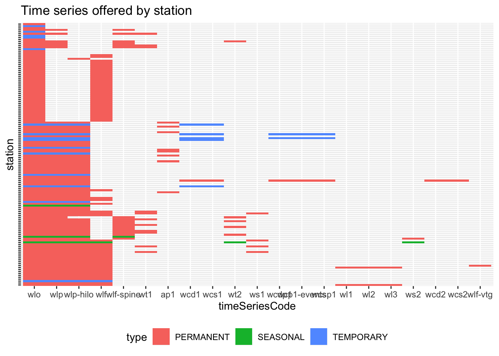
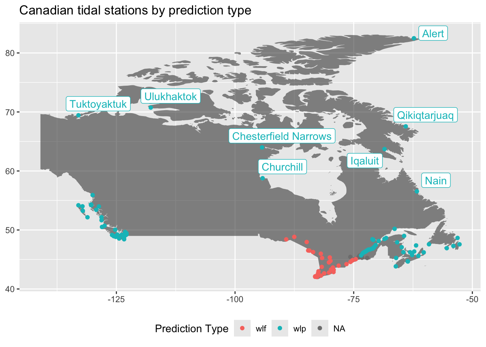
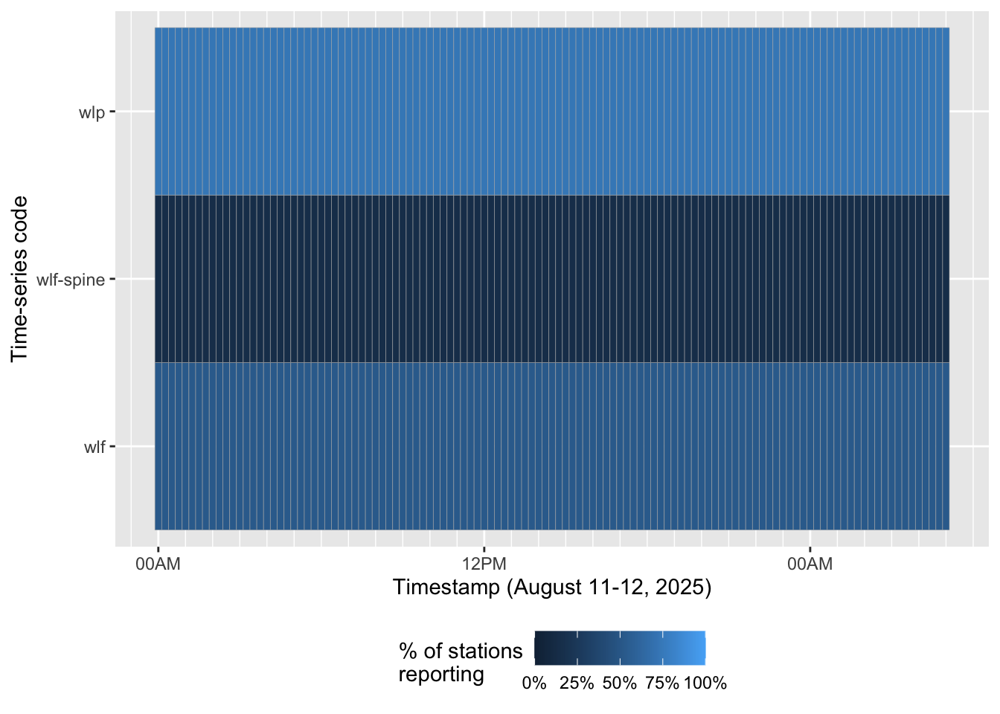
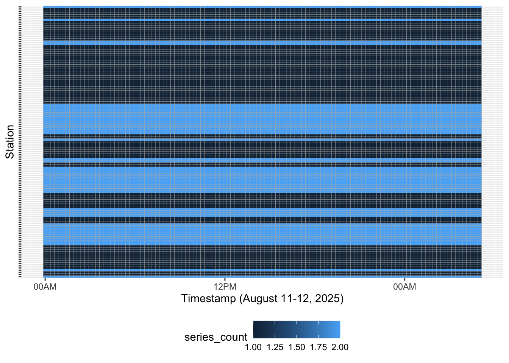

library(tidyverse)
library(httr2)
base_url <- "https://api.iwls-sine.azure.cloud-nuage.dfo-mpo.gc.ca" |>
request() |>
req_url_path_append("api/v1") |>
req_user_agent("floatingtrails.dev") |>
req_headers(accept = "application/json")A few weeks ago, I reached out to the maintainer of Floating Trails, a free website for ocean-going paddlers that allows users to view nautical charts and campsites for the US and Canadian coastline. I asked to help contribute and he agreed; his first interest was adding tidal predictions for the Canadian coastline. Floating Trails offers water-level, current speed, and current direction predictions in the US for every 15 minutes and the first task for integrating Canadian data was unerstanding whether coverage for Canadian tidal stations was comparable.
The Canadian Hydrographic Service
CHS operates tidal stations in the Atlantic, Pacific, and Arctic Oceans in addition to the St. Lawrence river.
The St. Lawrence, with its funnel shape and shallow depth, makes for intense tides.
Each station include at least one of:
- buoy
- ground tackle
- current meters
- radio transmitter
- recording mechanism
CHS provides a REST API for these stations and decent documentation of each endpoint.
What tidal data does each station offer?
We can query metadata about stations by pinging the stations/{stationId}/metadata endpoint. I’m using httr2 to perform and interpret each request and—of course—tidyverse:
Using this API path, we can fetch metadata for the St. Lawrence station:
base_url |>
req_url_path_append("stations/5cebf1e13d0f4a073c4bbeb9/metadata") |>
req_perform() |>
resp_body_string()[1] “{"id":"5cebf1e13d0f4a073c4bbeb9","code":"00755","officialName":"St. Lawrence","alternativeNames":"Great St. Lawrence","latitude":46.916789,"longitude":-55.39005,"type":"PERMANENT","status":"OK","operating":true,"expectedProductivityPerHour":60,"owner":"CHS-SHC","stationOwner":{"id":"5ce598ed487b84486892825c","code":"CHS-SHC","version":1,"acronymEn":"CHS","acronymFr":"SHC","nameEn":"Canadian Hydrographic Service","nameFr":"Service hydrographique du Canada"},"chsRegionCode":"ATL","provinceCode":"NL","classCode":"A","isTidal":true,"timeZoneCode":"Canada/Newfoundland","tideTableId":"5da0907154c1370c6037fcce","isTideTableReferencePort":false,"timeSeries":[{"id":"5cebf1e13d0f4a073c4bbeb5","code":"wlo","nameEn":"Water level official value","nameFr":"Niveau d’eau, valeur officielle","phenomenonId":"5ce598df487b84486892821c","owner":"CHS-SHC"},{"id":"5cebf1e13d0f4a073c4bbeb6","code":"wlp","nameEn":"Water level predictions","nameFr":"Prédictions de niveaux d’eau","phenomenonId":"5ce598df487b84486892821c","owner":"CHS-SHC"},{"id":"5cebf1e13d0f4a073c4bbeb7","code":"wlf","nameEn":"Water level forecasts generated by the FMS","nameFr":"Prévisions de niveaux d’eau générées par le FMS","phenomenonId":"5ce598df487b84486892821c","owner":"CHS-SHC"},{"id":"5d9dd7cc33a9f593161c3ffc","code":"wlp-hilo","nameEn":"High and Low Tide Predictions","nameFr":"Prédictions de pleines et basses mers","phenomenonId":"5ce598df487b84486892821c","owner":"CHS-SHC"}],"datums":[{"code":"CGVD28","offset":-1.32,"offsetPrecision":2},{"code":"NAD83_CSRS","offset":1.43,"offsetPrecision":2}],"heights":[{"heightTypeId":"5cec2eba3d0f4a04cc64d5d7","value":2.67,"valuePrecision":2},{"heightTypeId":"5cec2eba3d0f4a04cc64d5d8","value":0.28,"valuePrecision":2},{"heightTypeId":"5cec2eba3d0f4a04cc64d5ce","value":2.63,"valuePrecision":2},{"heightTypeId":"5cec2eba3d0f4a04cc64d5d3","value":0.33,"valuePrecision":2},{"heightTypeId":"5cec2eba3d0f4a04cc64d5d4","value":2.17,"valuePrecision":2},{"heightTypeId":"5cec2eba3d0f4a04cc64d5d5","value":0.72,"valuePrecision":2},{"heightTypeId":"65316afc3cf474827e39a7ef","value":2.07,"valuePrecision":2},{"heightTypeId":"65316afc3cf474827e39a7f0","value":0.74,"valuePrecision":2},{"heightTypeId":"5cec2eba3d0f4a04cc64d5d2","value":1.39,"valuePrecision":2},{"heightTypeId":"5cec2eba3d0f4a04cc64d5d1","value":3.63,"valuePrecision":2,"date":"2021-09-10"},{"heightTypeId":"5cec2eba3d0f4a04cc64d5d6","value":-0.4,"valuePrecision":1,"date":"2021-09-11"}]}”
This fetch gets us:
latlngstation(code)idnametimeZoneIddepth
Frustratingly, the API documentation lists fields that are important for tidal data but are not populated:
[highestHigh|lowestLow]WaterTimeDifference[flood|ebb]direction
It turns out that currents are only predicted at a few stations—less than 10—around Canada. Those stations, such as Abegweit Passage, include the flood and ebb direction as well as predictions throughout the day.
The CHS API does add tideTypeCode, which designates the tide at that station as one of:
More information at CHS’ website.
- semi-diurnal
- mainly semi-diurnal
- mainly diurnal
- diurnal
Now we know about what kind of information we can learn about each station but we don’t know which stations exist!
Where are tidal stations located?
After querying this API a few times, I noticed that some stations are not currently operating. To filter these stations, I chose stations with future timestamps but without specifying any time-series codes. ::: {.column-margin} Each timeSeriesCode corresponds to a different type of data, such as wlp for water-level predictions and wlo for water-level observations. :::
Let’s get these stations as a dataframe for further visualization:
all_stations <- base_url |>
req_url_path_append("stations") |>
req_url_query(!!!list(
dateStart = "2025-08-01T00:00:00Z",
dateEnd = "2025-08-09T23:59:59Z"
)) |>
req_perform() |>
resp_body_json() |>
map(\(x) as_tibble(x)) |>
list_rbind() |>
unnest_wider(timeSeries, names_sep = "")These data have abbreviated info about each station, plus information about the time series they offer:
glimpse(all_stations)Rows: 456
Columns: 16
$ id <chr> "5cebf1e43d0f4a073c4bc45a", "5cebf1e43d0f4a073c…
$ code <chr> "07780", "07780", "07780", "11860", "11860", "0…
$ officialName <chr> "Ambleside", "Ambleside", "Ambleside", "Goderic…
$ operating <lgl> TRUE, TRUE, TRUE, TRUE, TRUE, TRUE, TRUE, TRUE,…
$ latitude <dbl> 49.32577, 49.32577, 49.32577, 43.74535, 43.7453…
$ longitude <dbl> -123.15458, -123.15458, -123.15458, -81.72780, …
$ type <chr> "PERMANENT", "PERMANENT", "PERMANENT", "PERMANE…
$ timeSeriesid <chr> "5cebf1e43d0f4a073c4bc455", "5cebf1e43d0f4a073c…
$ timeSeriescode <chr> "wlp", "wlo", "wlp-hilo", "wlo", "wlf", "wlp", …
$ timeSeriesnameEn <chr> "Water level predictions", "Water level officia…
$ timeSeriesnameFr <chr> "Prédictions de niveaux d'eau", "Niveau d'eau, …
$ timeSeriesphenomenonId <chr> "5ce598df487b84486892821c", "5ce598df487b844868…
$ timeSeriesowner <chr> "CHS-SHC", "CHS-SHC", "CHS-SHC", "CHS-SHC", "CH…
$ timeSerieslatitude <dbl> NA, NA, NA, NA, NA, NA, NA, NA, NA, NA, NA, NA,…
$ timeSerieslongitude <dbl> NA, NA, NA, NA, NA, NA, NA, NA, NA, NA, NA, NA,…
$ alternativeName <chr> NA, NA, NA, NA, NA, NA, NA, NA, NA, NA, NA, NA,…To see them a bit more comprehensively, we can visualize them as a tile plot:
all_stations |>
group_by(timeSeriescode) |>
mutate(not_null = sum(!is.na(timeSeriescode))) |>
ungroup() |>
ggplot(aes(reorder(timeSeriescode, not_null, decreasing = T), code, fill = type)) +
geom_tile() +
scale_y_discrete(labels = NULL) +
theme(legend.position = "bottom") +
labs(
x = "timeSeriesCode",
y = "station",
title = "Time series offered by station"
)
This shows lots of time series. The first section, which is entirely filled in, represents water-level observations. This makes sense: each station has equipment for measuring water level. The next section which is mostly filled in, contains various time series for water-level predictions: wlp;wlf for water-level forecasts; and wlf-spine for water-level forecasts using the St. Lawrence prévisions interpolées de niveaux d’eau. The rest of the plot shows secondary measurements (eg. wl2 for water level at measurement point 2) and water current data.
To get a sense of where we can find water-level predictions, let’s map the stations and pull in their relevant time series. To do so, we’ll use ggmap and ggrepel:
all_stations |>
mutate(timeSeriescode = if_else(timeSeriescode %in% c("wlp", "wlf", "wlf-vtg", "wlf-spine"), timeSeriescode, NA)) |>
group_by(officialName, longitude, latitude) |>
summarize(predictionCode = first(timeSeriescode, order_by = desc(timeSeriescode))) |>
ggplot() +
geom_polygon(data = map_data("world", region = "Canada"), aes(x = long, y = lat, group = group, alpha = .1), show.legend = FALSE) +
geom_point(
aes(x = longitude, y = latitude, color = predictionCode),
) +
ggrepel::geom_label_repel(
aes(x = longitude, y = latitude, label = officialName, color = predictionCode),
max.overlaps = 15,
show.legend = FALSE
) +
theme(legend.position = "bottom") +
labs(color = "Prediction Type", x = NULL, y = NULL, title = "Canadian tidal stations by prediction type")
Using this plot, we may guess that wlf is for freshwater, where the tide is more influenced by meterological events than saltwater stations, which are more influenced by the various components that create an ocean tide.
Does each station offer predictions at the 15-minute grain?
Remember our goal is to match the US data with tidal predictions every 15 minutes for all Canadian stations. If the data aren’t provided then we will need to do some front-end work to accommodate null values or change the user’s ability to select lower granularities.
To assess the coverage of 15-minute intervals, I’ll write a function that will take arguments from the data frame and build a URL to query the API. Then, I’ll query each station using that function and extract the results as a data frame for further analysis.
Constructing the set of stations
First, I’ll filter to the stations with a listed timeSeriesCode among the water-level forecasts and predictions.
Composing the requests
To make requests appropriately, we need to mind the API’s query limits. CHS states that >Limits on Requests per client (IP): >- Up to 3 requests per second >- Up to 30 requests per minute > >Limits on data per request: >-1 minute data – 1 week >-3 minute data – 3 weeks >-all other lower resolutions, - 1 month > >If you receive a 429 error from your request it is likely you may be exceeding 1 or more of these limits. If this is the case, please modify your requests to comply with the limits defined above.
In this case, we can use req_throttle and set the capacity to 30 (per minute).
station_data <- function(timeSeriescode, id) {
base_url |>
req_url_path_append("stations") |>
req_url_path_append(id) |>
req_url_path_append("data") |>
req_url_query(!!!list(
`time-series-code` = timeSeriescode, # water-level predictions
from = "2025-08-11T00:00:00Z",
to = "2025-08-12T05:00:00Z",
resolution = "FIFTEEN_MINUTES"
)) |>
req_throttle(capacity = 30)
}Usually, if I were writing a function, I wouldn’t hardcode what the user may want to change; I’d leave from, to, and resolution undefined so that users could specify how they’d like. In this case, I decided to hardcode them to make the next bit easier. purrr::pmap takes a dataframe and performs the function on each row, filling arguments by matching names from the function signature to column names in the dataframe.
requests <- all_stations |>
filter(timeSeriescode %in% c("wlp", "wlf", "wlf-spine")) |>
select(
id,
timeSeriescode
) |>
pmap(station_data)We now have a list of httr2_requests. Here are the first 2 elements:
requests[1:2][[1]]<httr2_request>GET
https://api.iwls-sine.azure.cloud-nuage.dfo-mpo.gc.ca/api/v1/stations/5cebf1e43d0f4a073c4bc45a/data?time-series-code=wlp&from=2025-08-11T00%3A00%3A00Z&to=2025-08-12T05%3A00%3A00Z&resolution=FIFTEEN_MINUTESHeaders:• accept: "application/json"Body: emptyOptions:• useragent: "floatingtrails.dev"Policies:• throttle_realm: "api.iwls-sine.azure.cloud-nuage.dfo-mpo.gc.ca"
[[2]]<httr2_request>GET
https://api.iwls-sine.azure.cloud-nuage.dfo-mpo.gc.ca/api/v1/stations/5cebf1e43d0f4a073c4bc3a3/data?time-series-code=wlf&from=2025-08-11T00%3A00%3A00Z&to=2025-08-12T05%3A00%3A00Z&resolution=FIFTEEN_MINUTESHeaders:• accept: "application/json"Body: emptyOptions:• useragent: "floatingtrails.dev"Policies:• throttle_realm: "api.iwls-sine.azure.cloud-nuage.dfo-mpo.gc.ca"Since we specified how to throttle requests for each request, we can now parallelize their execution. If any of them error out—for instance, if this breaks the API’s request limit despite the documentation or if any time series are not available even though they were returned by the stations endpoint—I’d like to know but also continue the requests.
responses <- requests |>
req_perform_parallel(on_error = "continue")Extract predictions
This returns a list of HTML responses. Instead of extracting the data we need from the body, I left this object in memory so that I could work on different ways to extract it. purrr::map applies functions across a list and returns the same list back, making its output format stable. As much as I like working with dataframes, keeping the data structure nested avoids multiplying the size of the data. For this code block, I commented each line to explain what it does:
tidal_data <- responses |>
map(resp_body_json) |> # extract body of response, assuming JSON
map_depth(.depth = 2, .f = as_tibble_row) |> # convert each element into a list of dataframe rows
map(list_rbind) |> # bind the list of dataframe rows into a single dataframe for each element
set_names(map(responses, "url")) |> # name each element according to its url
list_rbind(names_to = "url") |> # reduce the list of dataframes into a single dataframe with url as a column
mutate(
id = str_split_i(url, "/", 7), # extract station ID
time_series_code = str_split_i(url, "=|&", 2), # extract time-series code
eventDate = as_datetime(eventDate) # parse datetime
)Visualize predictions for each station
Let’s look at this first by time-series code so that we can see which time series offer the most stations for each 15-minute block of time. It would be great if one time series, like wlp offered total coverage:
tidal_data |>
group_by(time_series_code, eventDate) |>
summarize(observations = n()/nrow(distinct(tidal_data, id))) |>
ggplot() +
aes(x = eventDate, y = time_series_code, fill = observations) +
geom_tile(color = "gray70") +
scale_fill_continuous(labels = scales::percent, limits = c(0, 1)) +
scale_x_datetime(date_labels = "%H%p", date_minor_breaks = "1 hour") +
labs(x = "Timestamp (August 11-12, 2025)", y = "Time-series code", fill = "% of stations\nreporting") +
theme(legend.position = "bottom")
Okay, so none of them have 100% coverage. But between wlp, wlf, and wlf-spine, can we get predictions for every station? To answer this, let’s visualize how many time series are available for each 15-minute block. If any stations are totally null, we’ll see that, too.
tidal_data |>
filter(!is.na(value)) |>
group_by(id, eventDate) |>
summarize(series_count = n()) |>
ggplot() +
aes(x = eventDate, y = id, fill = series_count) +
geom_tile(color = "gray70") +
scale_x_datetime(date_labels = "%H%p", date_minor_breaks = "1 hour") +
labs(x = "Timestamp (August 11-12, 2025)", y = "Station") +
theme(legend.position = "bottom", axis.text.y = element_blank())
Voila—for each station, for every 15 minutes, a prediction.
Next questions:
- What about current speed and direction?
- How far ahead can we query each dataset?
- When should we use
wlfversuswlp?